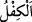

Sohbetin yadigârıdır bu eser
Yoksa ben bildiğin o kilim
“Ve ona êile efradını, ayrıca bunlarla birlikte bir mislini” daha önce olan
çocuklarının iki katı evlad “daha verdik.”
Rivâyet olunur ki Allah Teâlâ Eyyûb (a.s.)’ın hanımına gençliğini geri verdi. İbn
Abbas (r.anhûmâ)’dan rivâyet edildiği üzere o, kendisine yirmi altı çocuk doğurdu.
Allah ona mallarını da geri verdi. Eyyûb (a.s.), yoksullara merhamet eder, yetimlere ve
dullara kefil olur, misafire ikrâm eder ve yolcuları gidecekleri yere ulaştırırdı.”
Bir hadiste şöyle buyrulmuştur: “Eyyûb (a.s.) soyunmuş yıkanıyordu. Altından bir
çekirge sürüsü üzerine geldi. Eyyûb (a.s.) onları elbisesine toplamaya başladı. Rabbi
ona şöyle nidâ etti: “Ey Eyyûb, ben seni bu gördüğünden müstağnî kılmadım mı?”
Eyyûb (a.s.): “İzzetin hakkı için, evet. Lakin senin bereketine ben her zaman
muhtacım.”diye cevap verdi.”[206] Bu rivâyet, helâl malı çoğaltmak için çalışmanın
mubahlığına delâlet eder.
Kim Hak yolunda sabrederse
Maksûduna, murâdına nâil olur
Bir taraftan harcamak için sabır gerek
“Sabır sevincin anahtarıdır” sözü işte bundandır
Bil ki Eyyûb (a.s.)’ın başına gelen belâ, içinde olanın açığa çıkması ve onun Rabb’i
katındaki derecesinin yaratılmışlarca bilinmesi için bir imtihandı. Yûsuf (a.s.)’ın başına
gelen ise zindandan kurtulacağını sandığı kişiye: “Beni efendinin yanında an” (Yûsuf,
12/42) demesinden ötürü cezâsının öne alınması kabîlindendi. Yahya (a.s.)’ın
boğazlanmak sûretiyle başına gelen belâ, kerâmet/ikram kabilindendi. Çünkü o hiçbir
hatâyı asla gönlünden bile geçirmemişti.
85. İsmail’i, İdris’i ve Zülkifl’i de (yâdet). Hepsi de sabreden kimselerdendi.
“İsmail’i, İdris’i, Zülkifl’i de” yâdet. İsmâîl, Allah’a itâat eden mânâsınadır. İdrîs,
Mehlayil oğlu Berd oğlu Ahnûh’tur. Bazıları çok okuduğu için ona ‘İdris’ denildiğini
söylemiştir. Bunun açıklaması, daha önce geçmişti.
“
” kefâlet anlamındadır. “Zü’l-kifl” de kefâlet sahibi demektir. Allah,
İsrailoğulları’na gönderilen peygamberlerden birine: “Ben senin ruhunu kabz etmek
istiyorum. Mülkünü İsrailoğulları’na arz et. Bak bakalım, kim hiç bıkmadan gece namaz
kılmayı, gündüz oruç tutup iftar etmemeyi, insanlar arasında öfkelenmeden (adâletle)